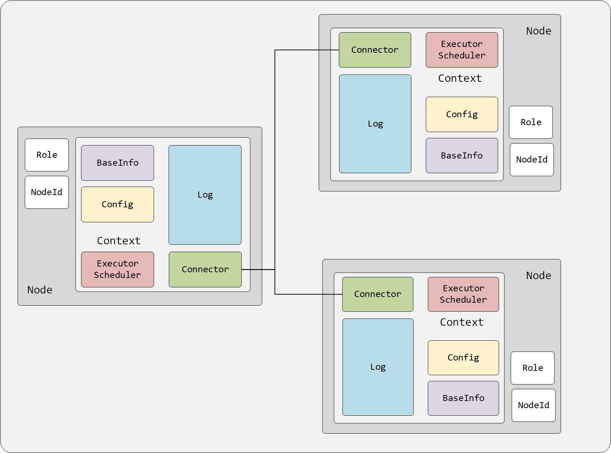
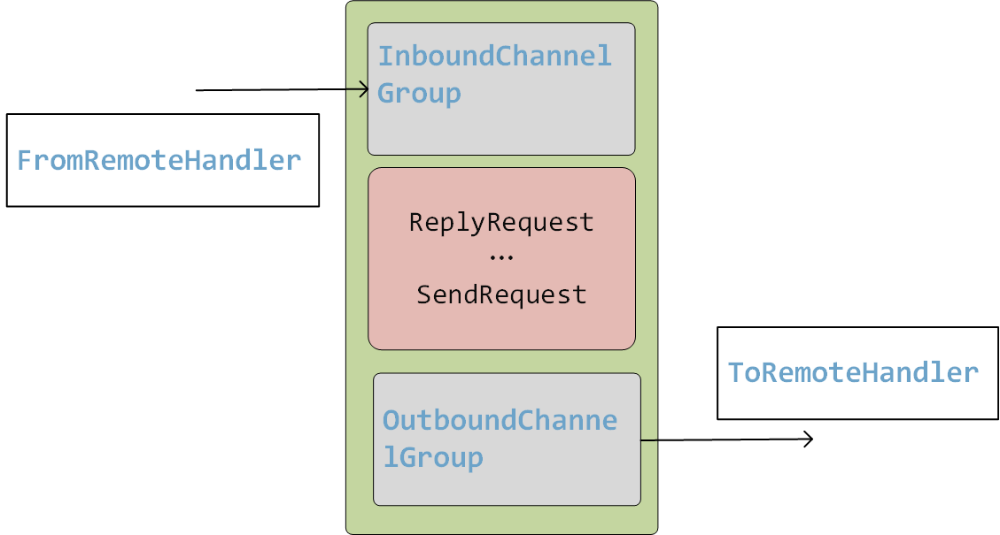
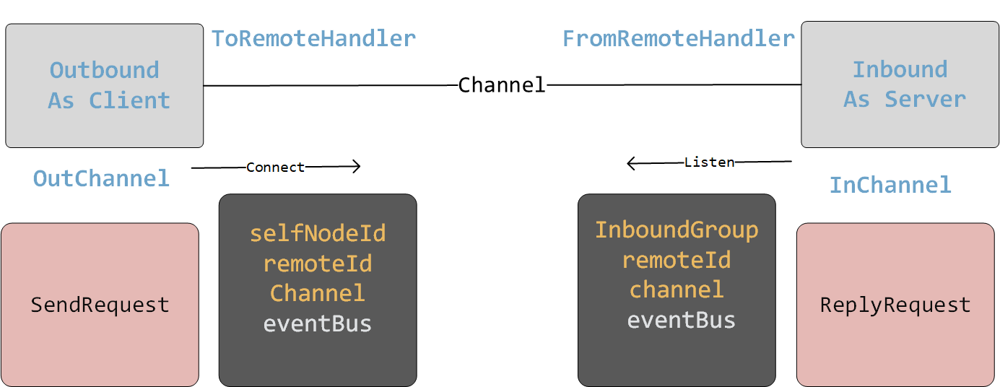
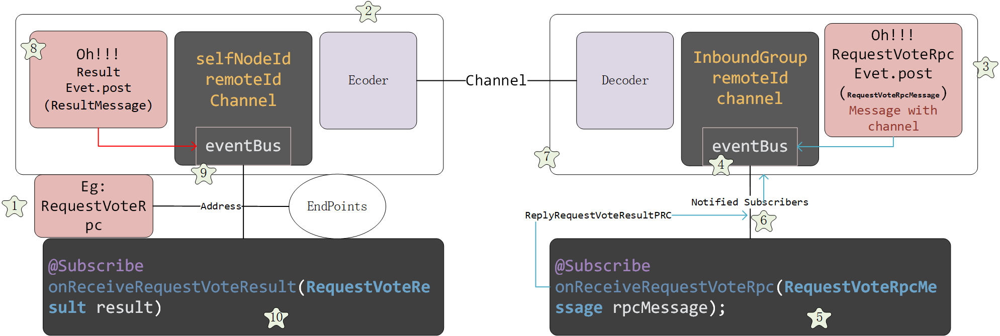

Connector

基本概念
connector 是Raft中基础的一部分.每个节点需要和其他节点相互连接.所有的RPC都是通过最终都是要经过Connector中通过节点之间的TCP连接.负责将数据传输
因为每个节点既可以作为Server . 也可以作为Client. 所以我们需要由 InboundChannelGroup 和 OutboundChannelGroup 分别记录与每个节点的网络连接。
InboundChannelGroup
1
private final List<NioChannel> channels = new CopyOnWriteArrayList<>();
OutboundChannelGroup
OutboundChannelGroup 相对就要复杂一些了。我们将Out 看作Client. 所以我们需要复制connect， 并且记录Channel.
1
2
3
4
5
6
7
8
9
10
11
12
13
14
15
16
17
18
19
20
21
22
23
24
25
26
27
28
29
30
31
32
33
34
35
36
37
38
39
40
41
42
43
44
45// as a client
class OutboundChannelGroup {
private static final Logger logger = LoggerFactory.getLogger(OutboundChannelGroup.class);
private final EventLoopGroup workerGroup;
private final EventBus eventBus;
private final NodeId selfNodeId;
private final int connectTimeoutMillis;
private final ConcurrentMap<NodeId, Future<NioChannel>> channelMap = new ConcurrentHashMap<>();
OutboundChannelGroup(EventLoopGroup workerGroup, EventBus eventBus, NodeId selfNodeId, int logReplicationInterval) {
this.workerGroup = workerGroup;
this.eventBus = eventBus;
this.selfNodeId = selfNodeId;
this.connectTimeoutMillis = logReplicationInterval / 2;
}
private NioChannel connect(NodeId nodeId, Address address) throws InterruptedException {
Bootstrap bootstrap = new Bootstrap()
.group(workerGroup)
.channel(NioSocketChannel.class)
.option(ChannelOption.TCP_NODELAY, true)
.option(ChannelOption.CONNECT_TIMEOUT_MILLIS, connectTimeoutMillis)
.handler(new ChannelInitializer<SocketChannel>() {
protected void initChannel(SocketChannel ch) throws Exception {
ChannelPipeline pipeline = ch.pipeline();
pipeline.addLast(new Decoder());
pipeline.addLast(new Encoder());
pipeline.addLast(new ToRemoteHandler(eventBus, nodeId, selfNodeId));
}
});
ChannelFuture future = bootstrap.connect(address.getHost(), address.getPort()).sync();
if (!future.isSuccess()) {
throw new ChannelException("failed to connect", future.cause());
}
logger.debug("channel OUTBOUND-{} connected", nodeId);
Channel nettyChannel = future.channel();
nettyChannel.closeFuture().addListener((ChannelFutureListener) cf -> {
logger.debug("channel OUTBOUND-{} disconnected", nodeId);
channelMap.remove(nodeId);
});
return new NioChannel(nettyChannel);
}
}
所以我们的Connector 全权负责网络的连接与数据的传输。 具体的逻辑不管。
1 | public class NioConnector implements Connector { |

我通过上图来说明一下我们整个Connector网络数据发送的过程.
建立连接
我们以Outbound为起始. 向指定node发送 一个数据 比如 RequestVoteRPC.
作为发送端. 我们从Node的Config数据. 获取到所有节点的 address.
- 当前节点connect远程的节点.
- 当channelActive之后. 当前节点 将该Channel 记录下来.
- 当前节点再将当前节点信息通过Channel 发送给远程节点。
- 远程节点记录当前节点的信息并且把该channel记录。
在ToRemoteHandler 和 FromRemoteHandler 中都传入了对应节点的EvetBus， 以便用RPC信息来通知Node执行相应的逻辑。
传输数据

建立连接之后就可以进行对应的数据的传输
- Candidate 发送 -> 调用Connector的SendRequetVoteRPC 到指定的Node ，地址 ID 等配置中有。
- Netty 底层的编码节码粘包拆包等细节处理-> 远程节点收到。
- 远程节点判定是RequestVoteRPC， 包装Channel信息包装到RPCMessage中-> event.post 通知订阅方法。onReceiveRequestVoteRpc.
- Node 订阅方法触发 ->处理逻辑.
- 逻辑处理完毕之后-> 回复, 将回复信息RequestVoteRPCResult写入刚才 PRCMessage中的Chanel.
- Netty 底层的编码节码粘包拆包等细节处理-> RPC请求发送者收到回复.
- Candidate 判定是RequestVoteRPCResult， event.post 通知订阅方法。onReceiveRequestVoteResult
- 订阅方法触发->处理逻辑